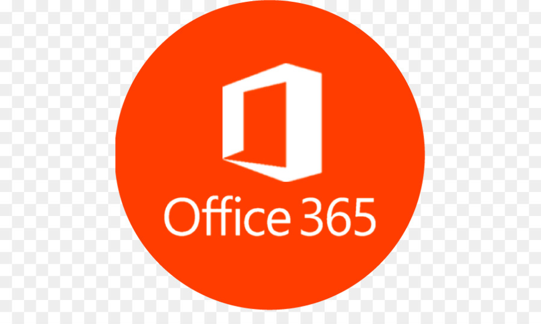
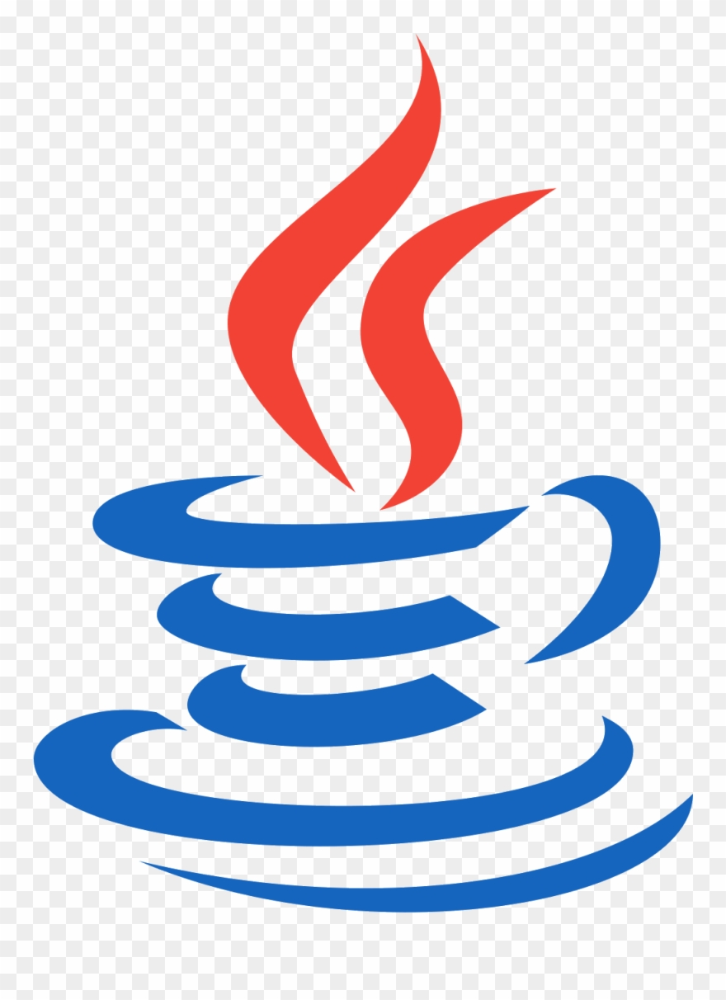
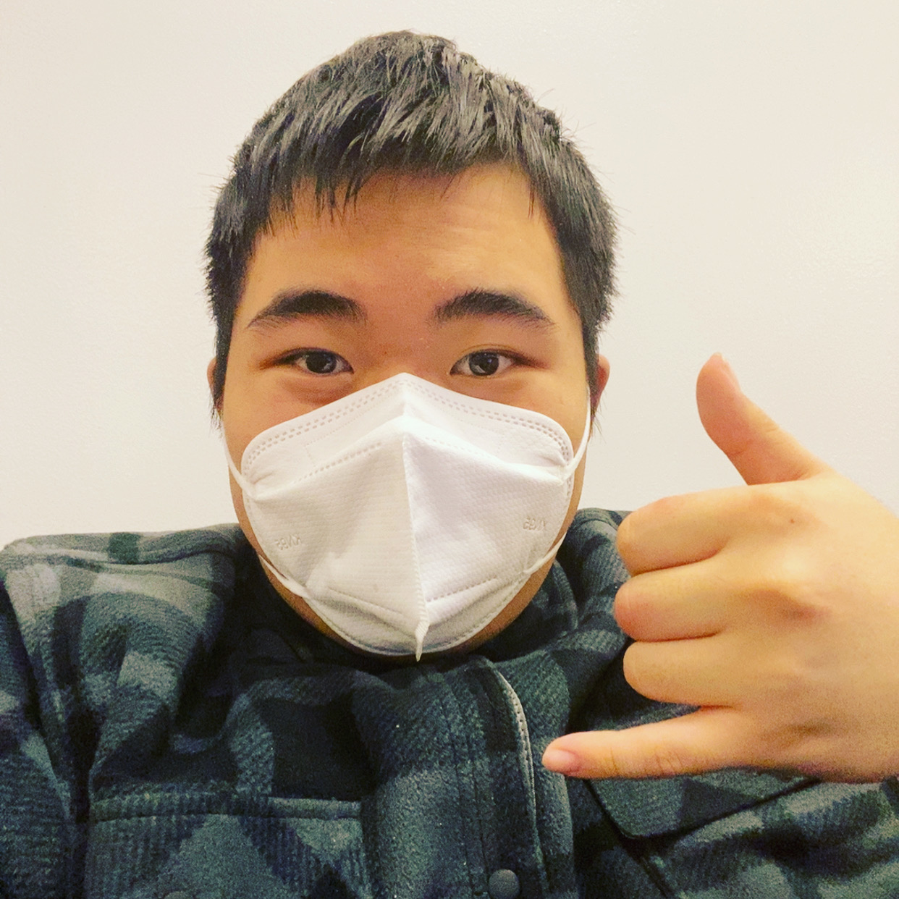
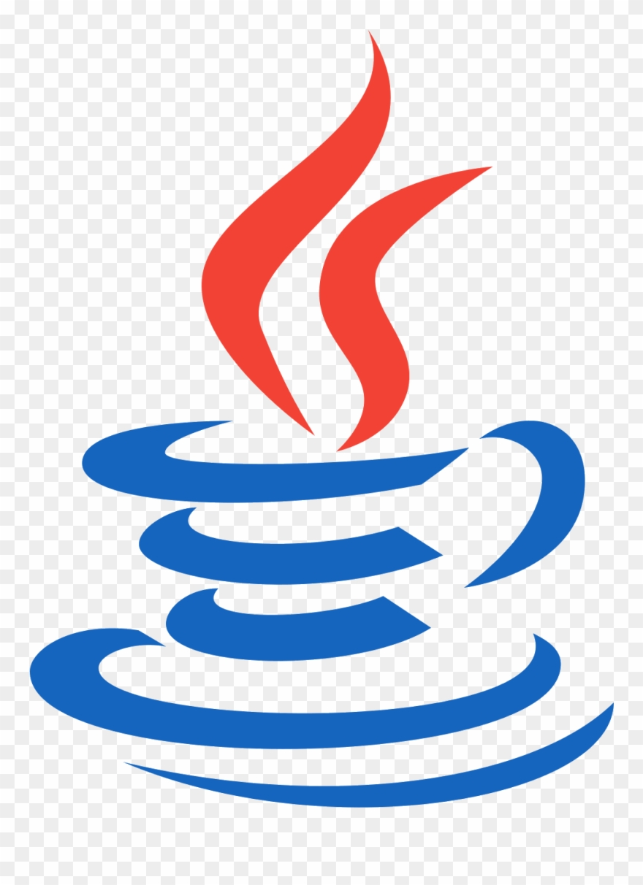
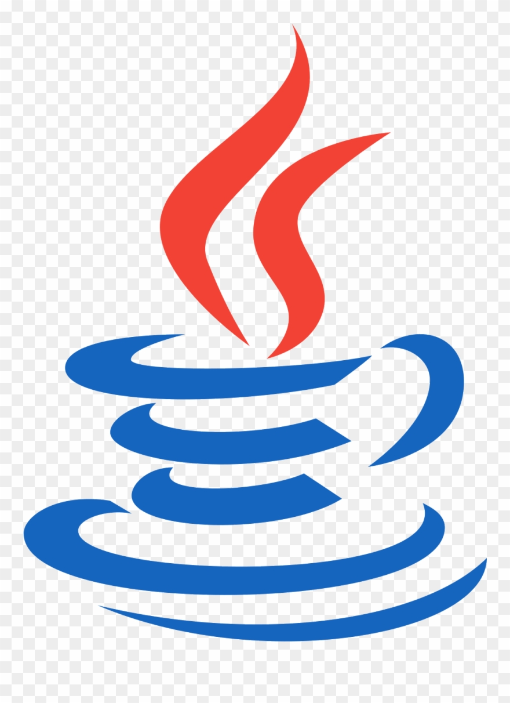

A 3rd Year that is in the process of getting a Computer Science Major/Math Minor at California State University, Los Angeles (CSULA). Welcome to my portfolio! :) If you want to see my resume,
press the "Download Resume" button below!
Technical Skills
Unity
2+ years of experience
Java
2+ years of experience
Adobe Photoshop
3+ years of experience
Microsoft Office
4+ years of experience


Biography

As an university student at CSULA, I am in the progress of reaching towards my end goal of getting my B.A in Computer Science,
at the same time getting a minor in Math to increase my chances of getting good internships in the future. I like working with others,
whenever if its group projects or classes overall. Before my journey began here at CSULA, I went to San Gabriel High School, where I was in a
club called BTA (Business and Technology Academy), where it was the starting point of the passion towards computer science in the first
place, and that the passion still flows to this point! :)
 
